Városi Áron Tamás
Tisztelt diáktársaim!
Engedjétek meg, hogy bemutatkozzam. A Városi Áron Tamás vagyok, a 10.a osztály tanulója és 2 éve a diákönkormányzat tagja.
Egy diákönkormányzat kötelessége és feladata a diákok érdekeinek képviselete. Meggyőződésem, hogy az iskola csak akkor tud jól működni, ha a diákok érdekei érvényesülni tudnak. Eddig is, és a megválasztásom után, DÖK-elnökként is azért fogok dolgozni, hogy mindannyian bele tudjatok szólni a titeket érintő ügyekbe, kérdésekbe, valamint, hogy minden diáknak a lehető legjobban teljenek az iskolai napok. Ezt bizonyítja az is, hogy idén elértem az iskola vezetőségénél, hogy a magyar vizsga ne a 0. órában kezdődjön. A továbbiakban is szeretnék eredményekben gazdag megállapodásokat kötni az iskolavezetéssel, hogy minden diák jól érezze magát.
A DÖK-mag tagjaként aktívan segítettem az különböző események, így a Halloween, a Holdvilág-bál, az Autómentes-nap szervezésében és lebonyolításában.
Már biztosan sokan ismerhettek a különböző iskolai eseményekről, ballagásokról, szalagavatókról, valamint a kamarakórusból. Képviseltem továbbá iskolánkat a Kossuth Rádió műsorában is.
Programunkban alelnökjelöltemmel, Vargha Zsomborral közösen kifejtettük ötleteinket és javaslatainkat. Az Élményekkel teli iskola program keretében minden hónapban legalább egy programot szervezünk, hogy az iskola ne csak a monoton tanulásról szóljon, hanem feltöltődést és kikapcsolódást is tartogasson a számotokra. Sportprogramunk keretében megrendezzük az egész tanéven átívelő SzAG-Liga bajnokságot röplabdából és fociból egyaránt. Korszerűsítési és felújítási programot hirdetünk, hogy lehetőleg minden, ami körülvesz minket, szép, rendezett, és korszerű legyen. A program során felújítjuk az öltözőket, korszerűsítjük a sportpályákat, kialakítunk egy nem menzás ebédlőt, és nem utolsó sorban fejlesztjük a közösségi tereket. Diákjóléti programunk keretében mindent elkövetünk, hogy megkönnyítsük számotokra az iskolai életet.
Az előbb felsorolt célok csak egy kis része a programunknak. A megvalósítás sorrendjét veletek közösen szeretnénk meghatározni, hogy valóban azok a célok valósuljanak meg leghamarabb, amelyre a legnagyobb szükség van.
Én mindent meg fogok tenni annak érdekében, hogy egy nagyszerű iskolai közeget hozzunk létre a ti érdeketekben.
Tisztelettel:

Városi Áron TamásVargha Zsombor
Sziasztok!
Vargha Zsombor vagyok, a 8.b osztályba járok. Városi Áron kért fel arra a feladatra, hogy én legyek a programokért felelős DÖK-alelnökjelöltje.
Már hetedikes korom óta DÖK-képviselőként és a DÖK-Mag tagjaként aktívan részt veszek a DÖK munkájában. Ez idő alatt minden esemény szervezésében és lebonyolításában részt vettem.
A DÖK-ön kívül sok más helyen is aktívan tevékenykedek. 2025 őszén lebonyolítottam a Harry Potter olvasmányi versenyt a könyvtáros segítségével, rendszeresen írok cikkeket az újságba, és minden hónapban megyek túrázni a sulis csapattal.
Programokért felelős DÖK-alelnökként egy fő célom van: szeretném, ha minden hónapban legalább egy színvonalas eseményt szerveznénk. Fontosnak tartom, hogy a programok által egy még összetartóbb közösség jöjjön létre, és, hogy az iskola ne csak a tanulásról, hanem az élményekről is szóljon.
Az összes jelenlegi programot megtartanám, sok korábbi programot visszahoznék, és még több új programot szerveznék.
DÖK-alelnökként mindent meg fogok tenni annak érdekében, hogy ezek a programok minden diák számára feltöltődést és szórakozást jelentsenek.

Vargha Zsombor